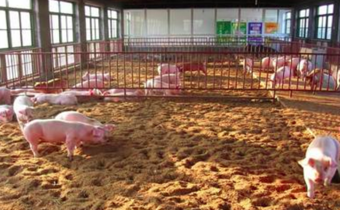

现代科学养猪新技术—原生态养猪

三、猪群的管理
原生态养猪时猪进圈前后应该注意哪些问题，我国原生态养猪技术在近3年的示范推广中取得很好的实践经验，现将我们在实践中取得的经验介绍一下：
清除寄生虫。用原生态新技术养猪时，入圈前应该使用敌百虫清除猪体表的寄生虫，用驱虫灵彻底清除猪体内的寄生虫，避免将其带入发酵床，使猪在啃食垫料上菌丝时，将虫卵吞入肚内感染。适时接种疫苗
与传统养猪一样，要按程序接种疫苗，控制疾病的发生。
进入猪舍的猪大小应较为均衡且健康，生病的猪要单独隔离(可单独留几个传统猪舍作为隔离栏舍)，不要进入猪舍，待正常后再进入。
设置足够的饲槽和饮水器，保持每头猪都能正常自由采食和饮水。采用原生态养猪时，可适当减少饲喂量，但24小时不能断料。饥饿的猪会吃垫料，猪采食过多的垫料会导致胃溃疡，影响生猪健康生长。
应经常检查猪群生长情况，大小、强弱差异较大时须从新分群。分群原则：夜分昼不分。从断乳猪(约7千克)到长成大猪，随着猪体重增大，粪尿排泄量不断增加，饲养密度应作相应调整。密度太高，垫料表面会非常潮湿，可能会产生氨味。
根据气温和垫料处理的能力，保持适当的饲养密度。**科学合理的饲养密度如表。
适当减少饲喂量，为使生猪增加拱翻床面物料次数，使排泄的粪尿快速分解，饲料喂量应控制在正常量的80%左右，即喂八成饱。生猪一般有在固定地点排粪、撒尿习惯，管理人员待粪便成堆时挖坑填埋即可。
盛夏季节要完全打开通风窗，必要时开启强制通风系统，使舍内空气能够对流，降低舍内温湿度;另在饮水中加点绿豆水等可降低猪体内燥热感。